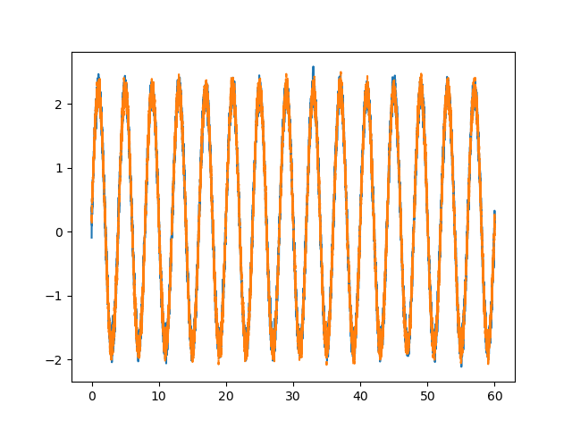

FFT interactive practice
1. FFT is an optimized version of which algorithm?
Discrete Fourier Transform (DFT)
Laplace Transform
Z Transform
Verify answer
2. If the sampling frequency is 1000 Hz, the number of FFT points is 1024, what is the frequency resolution?
≈ 0.98 Hz
≈ 1.95 Hz
≈ 100 Hz
Verify answer
3. FFT of the signal below Which option does the spectrum most likely correspond to?

Single peak + base noise
Multiple equally spaced peaks
No significant peak
Verify answer
4. When using Arduino to collect audio signals, in order to avoid aliasing, the sampling frequency should meet the following requirements:
≥ 2 times the highest signal frequency
≤ the highest signal frequency
Not related to signal frequency
Verify answer
5. The main function of the Hanning Window is:
Reduce spectrum leakage
Improve frequency resolution
Increase signal amplitude
Verify answer
6. When implementing real-time FFT with Arduino, you usually need to:
Send data to MATLAB/PC for processing
Calculate FFT directly on Arduino
Acquire time domain signal only
Verify answer
7. The FFT spectrum of a real signal usually has:
Conjugate symmetry
Random distribution
Only positive frequency components
Verify answer
8. The characteristics of white noise in the frequency domain are:
Flat power spectrum
Single frequency peak
Periodic fluctuation
Verify answer
9. When measuring vibrations with an Arduino accelerometer, FFT can help:
Identify the main frequency components of the vibration
Improve sensor accuracy
Reduce sampling time
Verify answer
10. In audio processing, FFT is often used for:
Equalizer design and pitch detection
Reduce file size
Enhance time domain waveform
Verify answer